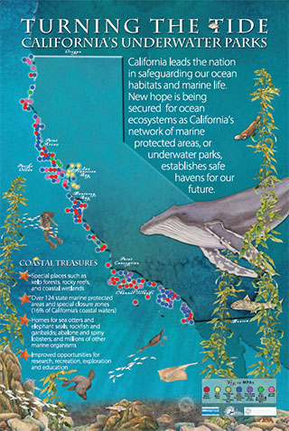
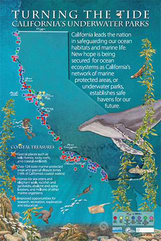

Local Environment Snapshot

Map of ocean water monitoring stations in Orange County (140 total locations).
Key indicators (Orange County)
- Coastal monitoring footprint: Orange County agencies collectively sample along 42 miles of open coastline and 70 miles of harbor and bay frontage, with 140 monitoring stations and weekly sampling collaboration across agencies. [1]
- Annual monitoring scale: approximately 7,500 water samples and 22,500 laboratory analyses were performed in the most recent reporting year described in the report. [1]
- Water resilience via recycling: in 2024 the Groundwater Replenishment System produced 101,051 acre-feet of purified recycled water; the facility was on-line about 98.15% of the year and reported no emergency discharges to the Santa Ana River that year. [2]
- Water resources monthly accounting (December 2025): year-to-date total groundwater recharge 128,266 acre-feet, groundwater production 150,247 acre-feet, accumulated overdraft 204,985 acre-feet (preliminary). [3]
- Flood control capacity modernization: the East Garden Grove–Wintersburg Channel Improvement Project redesign increased channel capacity by 50%. [4]
How to read this site
- Orange County operational facts come from Orange County public-agency reports.
- Climate context comes from statewide indicator reports to explain changing risks.
- Each statistic includes a numbered source reference.
Beaches, Harbors, and Water Quality
Monitoring network for beaches, harbors, and bays (map shown in the Orange County report).
What we are doing well
- Structured monitoring and notification: when bacteriological standards are exceeded, the public is notified, signs are posted, and monitoring can increase; the report describes use of Beach Mile Days. [1]
- Continuous response capacity: water quality staff are on-call 24 hours a day, 7 days a week for sewage or contamination incidents, with public information channels described in the report. [1]
What the dangers are
- Sewage spills: wastewater overflows can threaten waterways and beaches; untreated sewage is described as containing high levels of disease-causing bacteria and viruses. [1]
Education: how beach postings work
Water Supply, Groundwater, and Recycling

Groundwater replenishment system map showing major infrastructure for recycling, recharge, and intrusion protection.
What we are doing well
- Advanced water recycling: full advanced treatment (membrane filtration, reverse osmosis, ultraviolet light with advanced oxidation/disinfection) and delivery to recharge and injection components described in the report. [2]
- Operational reliability: the Advanced Water Purification Facility was on-line approximately 359.2 days in 2024 (98.15% of the year). [2]
- Volume delivered: 2024 purified recycled water production reported as 101,051 acre-feet. [2]
- Emergency discharge avoidance: the report states there were no emergency discharges to the Santa Ana River in 2024. [2]
What the dangers are
- Basin overdraft tracking: the monthly water resources summary reports an accumulated overdraft of 204,985 acre-feet (preliminary). [3]
What we need to do next (water)
Flood Control and Beach Protection


Channel improvements project visuals showing how capacity and protection were increased.
What we are doing well
- Stormwater capacity upgrades: the channel project increased capacity by 50%. [4]
- Beach erosion response: transport of approximately 132,000 cubic yards of sand to restore specific beach areas. [5]
- Infrastructure-scale maintenance: removal of approximately 357,000 cubic yards of trash and debris from county roads and flood control channels. [5]
What the dangers are
- Remaining floodplains: the report describes ongoing future improvements needed to reduce remaining floodplain risk. [4]
Climate Context and Drivers


Climate context figures used to explain coastal risk and planning assumptions.
This section provides statewide indicator context that explains why Orange County faces increasing stress from sea level rise, heat, and shifting water availability.
Physical changes that matter for Orange County
- Sea level rise: described as increasing by about 200 millimeters (8 inches) over the past century at example stations, with year-to-year variability and elevated levels during El Niño years. [6]
- Snow-water content variability: record low 5% of average in 2015 and 35% of average in 2022. [7]
- Snowmelt timing shifts: earlier shifts in snowmelt; past warming linked to increased early season runoff in the Sierra Nevada by about 30%. [8]


Snowpack concepts and measurements help explain water supply risk.
Human Health and Climate Risks


Health impacts include extreme heat, smoke, air pollution, vector ecology, and water quality impacts.
This section uses California health indicators to explain risk pathways relevant to Orange County: heat, smoke, air pollution, infectious disease, and climate-sensitive exposures.
Risk pathways
- Coastal contamination: bacteriological exceedances can trigger postings and advisories described in the Orange County report. [1]
- Heat and extreme events: statewide indicators include discussions of heat-related health burdens and climate-related exposures. [9]

Health impact categories mapped across environmental and social pathways.
Vegetation, Wildlife, and Ecosystems
 

Coastal ecosystems and marine protected areas are part of long-term biodiversity protection.
Local relevance
- Marine ecosystem sensitivity: coastal ocean temperature and sea level context support understanding of habitat stressors. [6]
- Pollution impact reduction: coastal water protection reduces contamination exposure pressures on wildlife and people. [1]

Pollution prevention framework: interventions at the source, along pathways, and at sinks.
Tribal Knowledge and Cultural Burning


Fire ecology concepts used to explain cultural burning, habitat recovery, and long-term resilience.
This section summarizes a tribal indicator narrative included in statewide climate indicator materials. It is included for education on how land stewardship, fire, and cultural practices relate to climate adaptation.
Key points from the tribal indicator narrative
- Narrative describes how climate impacts interact with stressors such as water diversions and fire suppression, and discusses renewed recognition of indigenous burning as an ecosystem component and restoration technique. [10]
What We Need To Do Next

Snowpack monitoring is used to communicate water supply risk signals across the western United States.
Priority actions (built from the risks described in the reports)
- Maintain coastal water monitoring, rapid response, and public notification systems, because postings and advisories are frontline tools for protecting public health. [1]
- Expand drought-resilient water supply through advanced recycling and recharge while maintaining performance and compliance. [2]
- Continue channel modernization that increases capacity and reduces floodplain exposure. [4]
- Reduce debris entering waterways; reported removal volumes reflect ongoing upstream pressures. [5]
- Plan for coastal impacts as sea level continues rising and can be amplified during El Niño years. [6]
Organizations To Know
Agencies collaborate across water quality monitoring, groundwater reliability, and flood control.
- Orange County Health Care Agency (Environmental Health Water Quality Team): coastal water monitoring, postings, and public notification systems. [1]
- Orange County Water District and Orange County Sanitation District: joint sponsors of the groundwater replenishment system described in the annual report. [2]
- Orange County Public Works: flood control projects, channel upgrades, beach erosion sand placement, and debris removal described in the State of the Department report. [4]
Quick Quiz
10 questions. Instant feedback. Score shown at the end.
Sources
- Orange County Ocean, Harbor and Bay Water Quality Report 2023–2024.
- 2024 Groundwater Replenishment System Annual Report.
- Orange County Water District Water Resources Summary (December 2025).
- Orange County Public Works State of the Department 2022–2024 (channel improvements).
- Orange County Public Works State of the Department 2022–2024 (sand placement; debris removal).
- Indicators of Climate Change in California (2022) – Physical Systems (sea level rise context).
- Indicators of Climate Change in California (2022) – Physical Systems (snow-water content context).
- Indicators of Climate Change in California (2022) – Physical Systems (snowmelt timing context).
- Indicators of Climate Change in California (2022) – Human Health section.
- Indicators of Climate Change in California (2022) – Tribal section (example narrative).
Some sections are statewide context because the indicators are statewide. Orange County operational data is from Orange County agency reports listed above.